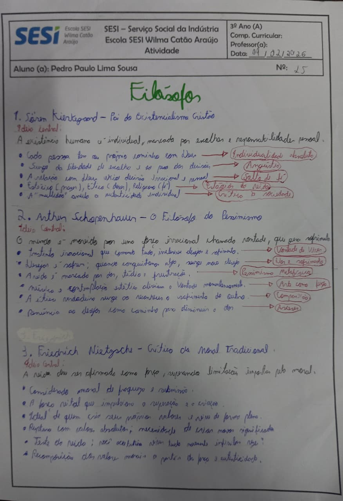
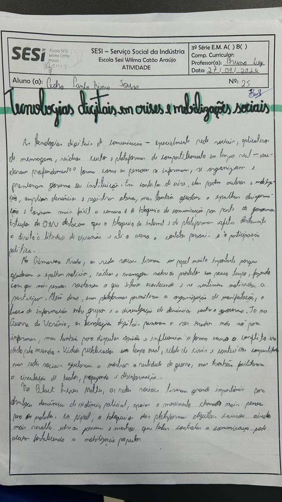
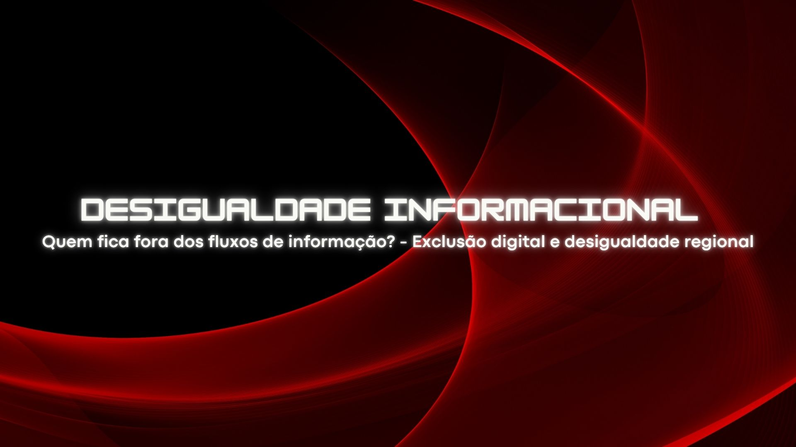
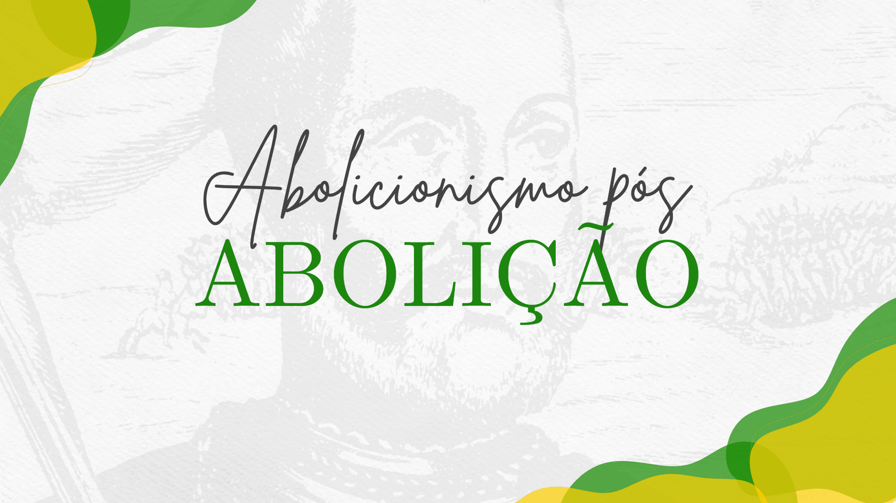
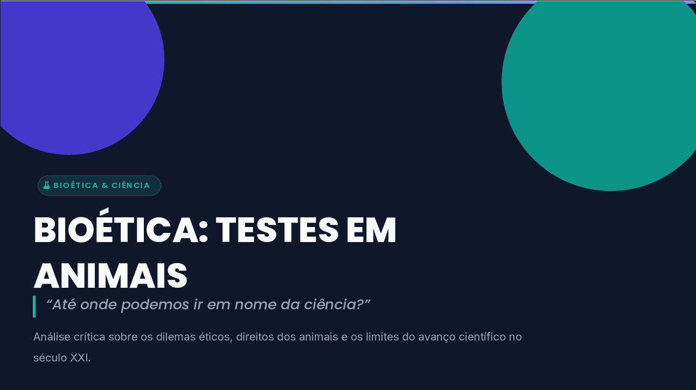
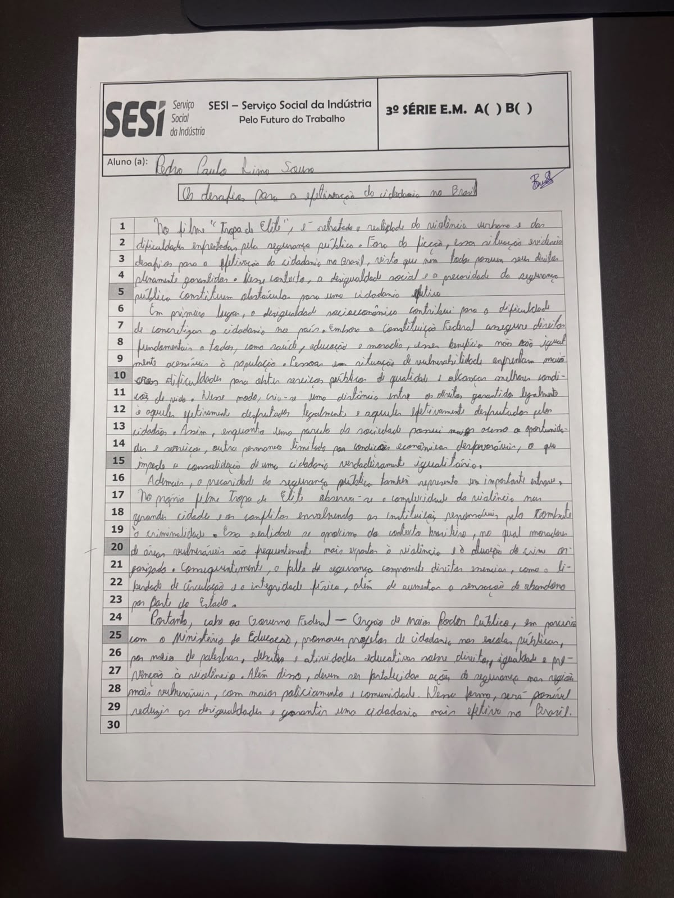

EIXO I

Atividade sobre os filósofos
Data: 09/02/2026
Professor: Bruno
Descrição: Estudo sobre filósofos e suas principais ideias.

Mapa mental sobre racismo ambiental
Data: 19/02/2026
Professora: Ileana
Descrição: Pesquisa sobre o racismo ambiental, ótimo para repertório e ficar por dentro da atualidade.

Atividade de entrevistas
Data: 09/03/2026
Professor: Bruno
Descrição: Gráfico baseados em entrevistas sobre emoções das pessoas no trabalho.

Apresentação sobre a resistência feminina
Data: 19/03/2026
Professora: Ileana
Descrição: Apresentação sobre a resistência feminina e sua importância.
EIXO II

Mapa mental sobre a Nova Ordem Mundial
Data: 16/04/2026
Professora: Ileana
Descrição: Mapa mental sobre a nova ordem mundial, essêncial para o entendimento do mundo atual.

A influência das tecnologias digitais em crises e movimentos sociais
Data: 20/04/2026
Professor: Bruno
Descrição: Relatório detalhado sobre como a tecnologia influência em questões de crises e movimentos sociais.

No século XXI, quem controla a informação, controla o mundo
Data: 20/04/2026
Professora: Ileana
Descrição: Apresentação sobre a a informação atualmente, em que específco nessa apresentação, é a parte sobre a desigualdade informacional.

Raízes históricas da violência estrutural e simbólica no Brasil
Data: 04/05/2026
Professor: Bruno
Descrição: Apresentação sobre Raízes históricas da violência estrutural e simbólica no Brasil, em específco, O abolicionismo pós abolição.

Texto dissertativo-argumentativo discutindo os limites da violência em tempos de guerra e seus impactos sobre a sociedade e o meio ambiente.
Data: 15/06/2026
Professor: Bruno
Descrição: Produção de um texto dissertativo-argumentativo discutindo os limites da violência em tempos de guerra e seus impactos sobre a sociedade e o meio ambiente.
EIXO III
Charge satirizando a Janja
Data: 03/08/2026
Professor: Bruno
Descrição: Produção de uma charge, utilizando metáfora para representar e criticar a política atual.

Bioética: Testes em Animais
Data: 20/08/2026
Professor: Ileana
Descrição: Trabalho sobre bioética.

Redação
Data: 31/08/2026
Professor: Bruno
Descrição: Redação sobre os problemas da efetivação da cidadania no Brasil.
EIXO IV
Nome da atividade